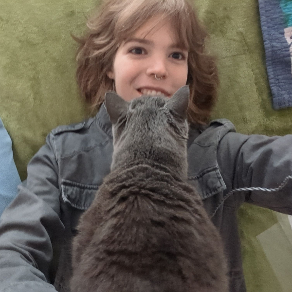

Having grown up with pets my entire life, I'm extremely familiar with how to provide a kind, nurturing presence for your animals. I know every pet and owner is different, and I love getting to know all the little details about your routines. From handbag-sized critters that need plenty of gentle care, to high-maintenance dogs that need many hours outside each day, I'm able to care for each one of your furry family members.
Before deciding if I'm right for you, please consider the following testimonials from some of my years-long clients.
- • Walks - $20 each, up to 1 hour (16$ each if you schedule 5 or more at once)
- • Pet sitting - $60/day
To book walks, send me an email at ivy-cornett@pm.me
Testimonials:
"I can’t say enough good things about Ivy! ... [They've] been a huge help with dog walking and house/pet sitting. They've stayed at my home for multiple nights, caring for my high-maintenance border collie (including multiple daily walks and feeding a special diet), as well as looking after my two cats. They made sure the cats were fed, cleaned the litter boxes, and gave them affection when they allowed it.
When I returned, my home was always in the same condition—if not cleaner—than when I left. Ivy kept in touch while I was away and sent occasional pictures, which put my mind at ease.
Overall, Ivy is one of the smartest, hardest-working people I know. Their intelligence and work ethic make them a true pleasure to work with. I truly couldn’t ask for a more trustworthy and reliable person to care for my home and pets. I highly recommend Ivy and can’t say enough good things about them!"
- Chari G.

"I have hired Ivy as my pet sitter for the past two or three years. Ivy is very easy to work with. They have never turned me down when I’ve asked them to watch my critters. Even when I have called at the very last minute, when it’s over a holiday, or no matter how short or long a time I need them for. We text one another when I’m away, and Ivy keeps me informed not only about how the pets are, but if there are any problems with the house or something they think I would want to know about. They have good judgment and problem solving abilities.
I always ask for pictures of how my pets are doing, especially my 14 y.o. cat. [My cat] is usually slow to warm up to people, and started off their times together by running away from them and always hiding. It’s been really fun to see their relationship grow, and read their texts and see the progress they’ve made over time. This picture says it all!!"
- Laurie S.